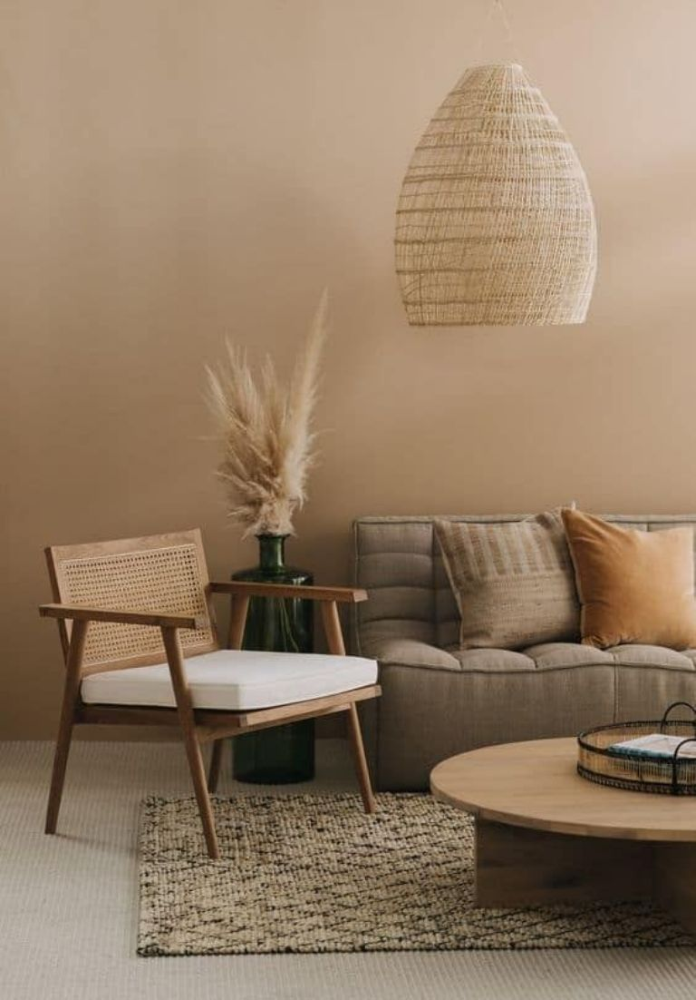
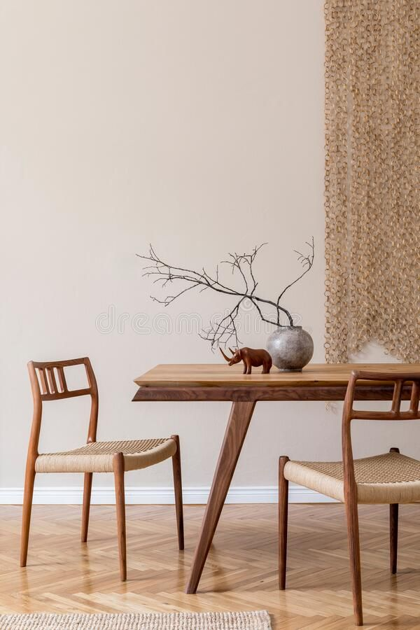
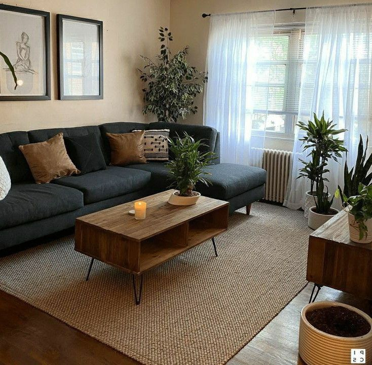

'클릭만 하면 됩니다' Välinge 5G® locking systedfdfdfdfdfdfm
1993년에 설립된 Välinge Innovation은 바닥재 산업을 위한 기술
혁명을 개척했으며 전통적인 텅(혀) 앤 그루브(홈) 접착 방식에서
오늘날의 현대적인 클릭 기술로의 전환을 주도했다. Välinge
Innovation은 최초의 기계 공학적인 잠금 시스템을 출시한 이후로
바닥, 가구 및 표면 기술에 대해 3500개 이상의 특허를 취득했으며 전
세계적으로 300개 이상의 라이센스 사용자가 이 혁신 기술을 사용하고
있다. 그들의 모든 기술과 개념은 세계에서 가장 진보된 바닥재 및
가구 R&D 센터 중 하나인 스웨덴 Viken의 HQ에서 개발되었다. 또한
최첨단 바닥재 생산 시설과 기술 지원, 테스트 및 샘플 제조 허브가
있는 곳이기도 하여 라이센시(특허사용자)에게 모든 단계에서 혁신과
품질을 보장한다. Välinge에서 혁신은 모든 것에 내재되어 있는 것
같다. 우리는 ‘클릭 철학’에 대해 자세히 알아보기 위해 잠금 시스템에
대해 아시아 지역 관리자인 Magnus Holgesson과 대화를 나눴다.
엣지 한 스푼, 유리블럭 인테리어 4선
유리블럭을 통과한 빛은 한층 풍부하며 온화하다. 유리블럭은 내부가
부분 진공상태라 단열성이 좋으며 뛰어난 차음성을 자랑한다. 이외에도
유리블럭은 내화성, 내구성, 결로방지와 같은, 알고 나면 내 집에서 꼭
한 번은 경험하고 싶은 여러 장점이 있다. 한동안 보기 힘들었던
유리블럭이 다시 돌아왔으니, 유리블럭의 놀라운 기능성을 적재적소에
기용해 소중한 일상을 더 풍요롭게 만든 집 네 곳을 안내한다.


여백으로 가족들의 쉼을 찾아드린 공간
집의 활용도가 확대되고 있지만 집의 본질은 여전히 편안하고 안락한
휴식공간이다. 그리고 양질의 휴식을 위해서는 이에 적합한 인테리어가
필수다. 복잡하고 화려한 공간보다는 편안함과 따스한 온기가 느껴지는
공간이 ‘쉼’과 더 어울린다. 이번에 커먼그라운드디자인이
인테리어·리모델링을 진행한 ‘반포자이 아파트(52py)’ 현장은 이러한
밝고 안락한 집의 가치를 여실히 보여준다. 화이트와 우드의 조화를
통해 내추럴하면서도 안정감이 느껴지는 편안한 공간으로 연출했고,
온전한 휴식을 즐길 수 있는 공간들을 곳곳에 마련했다. 또한
전체적으로 미니멀하면서도 모던한 디자인을 통해 화사하고 정갈한
느낌을 주었다.